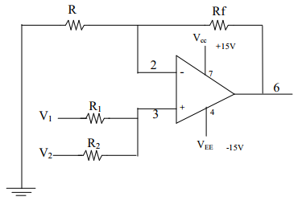

A virtual ground of the inverting input is the current summing point for a summing amplifier. Here the two input voltage are added at the output of the amplifier. non inverting summing amplifier the output sign will be changed of the input signal. In case of non-inverting amplifier two voltage will be added and the output sign will not be changed
Procedure:
1. Connect the circuit as per the circuit diagram using visual spice.
2. Apply the two input voltage at the input terminal and note down the output voltage for various input value.
3. The output for inverting summing amplifier is given by V0= -(V1+V2).
4. The same procedure is repeat for non-inverting summing amplifier and output is calculated as V0=(V1+V2).
Non-Inverting summer:
Design:
Circuit Diagram:

Table:
SI.No.
Input Voltage V1 (volt)
Input Voltage V2 (volt)
Output Voltage V0=(V1+V2 ) (volt)
Inverting summer:
Design:
Circuit Diagram:
Table:
SI.No.
Input Voltage V1 (volt)
Input Voltage V2 (volt)
Output Voltage V0=-(V1+V2 ) (volt)
SIMULATION DIAGRAM:
Upload the Screenshot:
Circuit for Summer:
Waveform obtained:
Result:
Differentiator:
Differentiator is the simplest of op-amp circuit that contain capacitor is he differentiating amplifier of differentiator. The circuit performs the mathematical operation of differentiator ie the output waveform is derivative of the input wave. The capacitance Cf is used to reduce the oscillation.
Procedure:
1. Connect the circuit as per the circuit diagram using visual spice.
2. Set the value of the input V1 as 1Vp-p (peak to peak) as constant.
3. By varying the frequency of input, the output voltage is observed note down the phase angle of V0 with respect to V1.
4. Repeat the step 3 for the square wave input V1 and note down the output voltage in the form of spikes
Design:
Circuit Diagram:
Model Waveforms:
SIMULATION DIAGRAM:
Upload the Screenshot:
Circuit for Differentiator:
Waveform obtained:
Result:
Integrator:
A simple RC network (low pass) can work as integrator. ie if we interchangethe resistor and capacitor of the differentiator.
Procedure:
1. Connect the circuit as per the circuit diagram using visual spice.
2. Set the input voltage of 1Vp-p at 500 Hz by using function generator.
3. Apply the square wave input to get the output as triangular waveform.